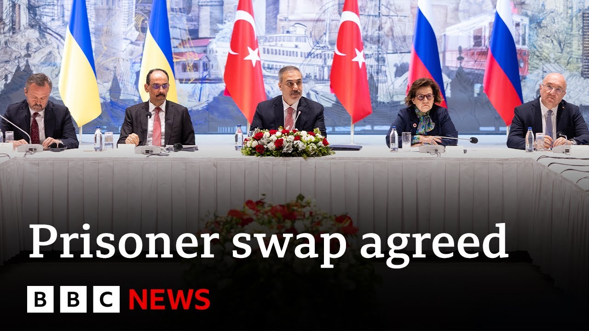

【乌克兰和俄罗斯在和平谈判后同意交换战俘 | BBC新闻】
Summary: Direct talks between Russian and Ukrainian delegations occurred in Istanbul, marking their first meeting in over three years, with low expectations and no significant progress beyond agreeing to another prisoner swap, while leaders like Zelensky, Macron, and the British PM emphasized the need for sanctions if Russia rejects ceasefire calls.
摘要： 俄罗斯和乌克兰代表团在伊斯坦布尔举行直接会谈，这是三年多来的首次会晤，预期较低且未取得重大进展，仅同意再次交换战俘；泽连斯基、马克龙和英国首相强调若俄罗斯拒绝停火呼吁需实施制裁。

⏱️ Estimated Reading Time: 7 min
Now, direct talks between Russian and Ukrainian delegations have been taking place in Istanbul today, the first such meeting between the waring parties in over three years.
目前，俄罗斯和乌克兰代表团今日在伊斯坦布尔举行直接会谈，这是交战双方三年多来的首次会晤。
There were no handshakes and the expectations were low.
双方未握手，且预期较低。
There was no significant progress today, although both sides have agreed on another prisoner swap, but no ceasefire and nothing that changes the status quo.
今日未取得重大进展，但双方同意再次交换战俘，未达成停火或改变现状的协议。
Donald Trump, of course, saying yesterday that there'd only be progress when he and Vladimir Putin actually meet.
当然，唐纳德·特朗普昨日表示，只有他与弗拉基米尔·普京实际会面时才会有进展。
Well, Ukraine's defense minister spoke outside of the talks in the last half an hour.
乌克兰国防部长在半小时前于会谈外发表讲话。
We have agreed to exchange thousand uh persons to thousand and we're working on other modalities and our colleagues are in contact and will exchange uh all the documents.
我们已同意交换一千人，并正在商讨其他细节，同事保持联系并将交换所有文件。
Thank you minister just one question please if it's possible uh what is the next step for the uh meetings after that what we need to expect now.
谢谢部长，请问下一步会议安排及当前预期。
So well uh now we need to exchange people and soon we will inform you what is the next stage.
目前需先完成人员交换，后续阶段将尽快通报。
Thank you so much.
非常感谢。
Well, let me bring you the latest from of course all those leaders that have also been speaking in the last little while.
接下来为您汇总近期各国领导人的最新表态。
President Zilinski has had a call with Donald Trump and said Ukraine is ready for quick steps for peace.
泽连斯基总统与特朗普通话，称乌克兰已准备好快速推进和平。
He said robust sanctions should follow if Russia rejects the ceasefire.
他表示若俄罗斯拒绝停火，需实施严厉制裁。
President Macron has also said it's unacceptable for Russia to again ignore Ukrainian ceasefire calls and that was a line also agreed with by Zaki Star the British prime minister.
马克龙总统称俄罗斯再次无视乌克兰停火呼吁不可接受，英国首相扎基·斯塔尔也认同此立场。
So those from the leaders in the last half an hour as well let's speak to Sergey Rajenko who is the professor at the John Hopkins School of Advanced International Studies.
以上是领导人半小时内的表态，现在连线约翰霍普金斯大学高级国际研究学院的谢尔盖·拉延科教授。
Thank you for being here with us.
感谢您的参与。
What is your analysis of what has actually been happening there in Istanbul?
您对伊斯坦布尔会谈的实际进展有何分析？
Well, uh, it's the expected.
这是预期内的结果。
It's a first meeting.
这是首次会晤。
The sides expressed their initial positions and now they will take those positions back to Moscow and Kiev and see if there's any give and take.
双方阐述了初步立场，将带回莫斯科和基辅评估是否有妥协空间。
What I understand as the next step in addition to the prisoner exchange which of of course is a positive development is that the two sides will consider ways of achieving a ceasefire and will exchange um ideas to this effect which may be then followed by another round of talks or I hope it will be followed by another round of talks.
除战俘交换这一积极进展外，下一步双方将探讨停火方案并交换意见，可能促成新一轮会谈。
A little earlier, Ukrainian diplomats were saying that the Russian delegation had demanded that Ukraine withdraws forces from its territory to get that ceasefire.
稍早前乌克兰外交官称，俄方要求乌军撤出其领土以换取停火。
That was described as totally unacceptable and an attempt to derail these talks.
乌方称此举完全不可接受，是破坏谈判的企图。
Is the Russian strategy, do you think, just that long game just continue to delay and delay and delay?
您认为俄方策略是否仅为拖延战术？
Not necessarily, but the Russians have been saying that they want to approach uh these talks and peace negotiations from the position of reality.
未必，但俄方称希望基于现实推进和谈。
What they however have failed to recognize is that the reality is that they have not been able to claim the uh territories that Russia has formally annexed.
然而他们未认识到现实是俄方未能控制其正式吞并的领土。
25% of Zaparisia remain out of reach for the Russians.
扎波罗热25%的地区仍不在俄方掌控中。
They're stuck in eastern Ukraine.
俄军困于乌克兰东部。
So if we recognize those realities, then we will have to have a ceasefire along the existing lines.
若承认这些现实，停火线需基于当前实际控制线。
And I think uh it's wise for the Ukrainians to reject preposterous demands by the Russians to actually remove Ukrainian forces from the territory that Russia has failed to conquer.
乌方拒绝俄方要求其撤出未失守领土的荒谬要求是明智的。
A twin final thought.
最后两点思考。
In the old world order, there would be deadlines and then if the actions weren't taken, then the various threats would be imposed.
旧国际秩序下会设最后期限，未履约则施以威胁。
We keep seeing in the new world order with Donald Trump, no line in the sand.
而特朗普主导的新秩序中未见底线。
So your thoughts on that and another thought to to weave in.
您对此的看法及另一关联问题。
Is Vladimir Putin's strategy working?
普京的策略是否奏效？
Because uh you heard Donald Trump say yesterday, "This only moves when Putin and I actually meet."
因特朗普昨日称"只有我与普京会面时才有进展"。
That of course sidelines Ukraine itself and the Europeans.
这显然边缘化了乌克兰和欧洲。
Well, Putin would love to have that meeting with Trump and to get Trump to arm twist President Zalinski into agreeing to demands from Russia that he would otherwise not agree to.
普京希望借特朗普向泽连斯基施压，迫使其接受俄方条件。
Uh, now is Putin winning?
普京目前是否占上风？
Uh, I don't think so.
我认为没有。
At the moment, Russia is bogged down in Eastern Ukraine.
目前俄军深陷乌东战场。
The war has taken on a very attritional character.
战争已呈现消耗战特征。
Um, as for peace talks, they can go on for a long time.
和谈可能持续很久。
There are no deadlines.
没有期限限制。
Peace talks in previous wars, think about the Vietnam war, the war of the Soviet invasion of Afghanistan, lasted for years and years before a settlement was achieved.
参考越战和苏阿战争，和谈多年才达成协议。
But the issue here is Donald Trump is a very impatient man and he wants quick results.
但问题是特朗普缺乏耐心，追求速成结果。
Now, he's not getting those results judging from what we just saw in Istanbul.
从伊斯坦布尔会谈看，他未获得预期成果。
Yes, of course, peace talks will take many, many months, if not longer.
和谈无疑将耗时数月甚至更久。
But the initial stage, the ceasefire stage, that is what continues to elude those parties on the ground, certainly the Ukrainians.
但初期停火阶段仍是各方——尤其是乌方——未能实现的。
Thanks very much.
非常感谢。
We will leave it there.
就此结束。
So sero, thanks for joining us on the program.
谢尔盖，感谢参与节目。
Thank you.
谢谢。